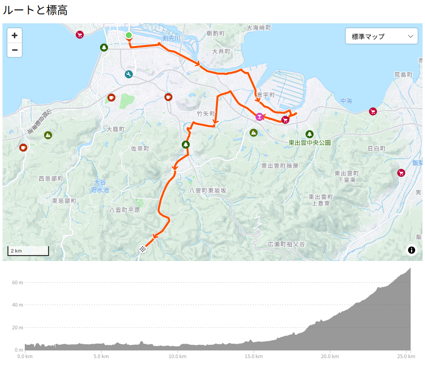

お散歩カメラ 2024-08-31

「キャッチャー・イン・ザ・うい Na-Na-Na」を「世界のういママ」にどうしても空耳してしまう今日この頃，皆様いかがお過ごしでしょうか。
まだまだ台風10号が西日本を蹂躙中ですが，とりあえず被害に遭われた方々にはお見舞い申し上げます。 幸いなことに松江市は大風が吹くこともなく降水量もそこそこで，ちょっと川が増水する程度で済んだようです。
というわけで，今日も自転車でお散歩に出掛けることにした。
松江駅→揖夜神社→武内神社→熊野大社
まずはこのコースで「松江駅→揖夜神社→武内神社→熊野大社」と進んでいこうと思う1。

行きがけにいつもの定点観測。
まだ台風一過とはいかない感じ。 この時点ではまだ大雨警報発令中だったしな。
JR松江駅から津田街道に入って東進する。
大橋川が中海に流れ込む河口付近にかかる橋。 涼しくなったらこの橋も渡ろうかなと計画中である。
さくっと揖夜神社に到着。
揖夜神社はまだ工事中なので（水分補給のための）小休憩のあと武内神社へ。
おおう。 意宇川が増水してるな。 まぁ，この程度なら大丈夫。 ちなみに「出雲郷」は「あだかい（または あだかえ）」と読む。
さて，武内神社到着。
武内神社はいわゆる「天神さん」で毎年8月31日にお祭りがあるのだが，子供の頃は夏休みの宿題が終わらないと武内神社のお祭りに連れてってもらえなかったので，頑張って終わらせたもんさ。 いや，夏休みギリギリまで宿題してんなよって話だが「夏休みの自由研究」とか「読書感想文」とかがどうしても終わらなくてねぇ。 そういや「夏休みの自由研究」にプラモデルを作って提出しようとして親に叱られたことがあったな。 あと「読書感想文」のネタに困って理科の学習参考書の感想文を書いて，うっかり市のコンクールで賞を取ってしまったり。 世の中は何が起こるか分からんよねー
武内神社の境内はめっちゃ広いので今回は鳥居だけ撮って終了。 次へ行くか。
おおっ。 日吉切通しも増水してるな。 この切通しのおかげで増水しても氾濫しなくなったんだよね。 先人の偉業に感謝です。
熊野大社に到着したよ。
ここも増水してるな。 まぁでも梅雨の終わり頃にあった大雨に比べれば大したことない。
先に熊野館で昼食を食べて，その後温泉でまったりする。
木次乳業さん，いつもお世話になってます。
おうふ。 まぁ，もう風はおさまってるので大丈夫だろう。
久しぶりに松江城へ
では市内に戻る。 久しぶりに松江城に行ってみよう。 ついでに縁結び大橋にも寄ってみるか。
と思ったら途中で雨が降り出したので，高架下で雨宿り。
雨雲レーダーを見ても雨雲なんかないぢゃん。 レーダーにも映らないほど局所的な雨なのか？ ほんじゃあ，しばらく待ったら止むかな…
よし，止んだ。 行っちゃえ！
いつもながら眺めがよくて走ってて楽しい。 大橋川はあんまり増水してる感じじゃないな。 松江市の治水が優れているということだろうか。
縁結び大橋を降りたら中州の田んぼ道を行く。
意宇平野もそうだったが，稲が倒れてる圃場は見当たらなかった。 台風の影響はなさそうだな。 うんうん。
あとは松江城までまっしぐら。
松江城の周辺
自転車は県立図書館の駐輪場に置いて，松江城に登る。 本丸に上がろうとしたら
門が閉まっとるがな orz
そういや，台風の影響で堀川の遊覧船も運休してるしお茶屋さんとかも閉まってるみたい。 なんてこったい。
気を取り直して… 城山周辺を歩いてお散歩してみることにした。 まずは北惣門橋を渡って
城山の北側を歩いてみる。
そういえば今年は小泉八雲（Lafcadio Hearn）の没後120周年なんだそうで。
加えて来年秋の某朝ドラは小泉八雲の奥さんが主役なんだって。
松江市としてはこの「観光資源」を逃さず利用しないとね，という感じなんだろう。 まぁ，私は小泉八雲自身にはあまり興味がないんだけど，「耳無芳一」とかは子ども心にめっちゃ怖かった2。
ここの地ビール館のビールは飲んでみたいんだけど，飲酒運転するわけには行かないので，機会がないんだよなー。 地ビール館の近くにはガンダムマンホールもある。
帰りませう
散歩してたらいい時間になったので帰ろうか。
おー。 あれに見えるは「天使のはしご」ではないか。 最後にええもん見れた。
参考

- Canon コンパクトデジタルカメラ PowerShot ZOOM 写真と動画が撮れる望遠鏡 PSZOOM
- キヤノン (Release 2020-12-10)
- エレクトロニクス
- B08L4WKDZ7 (ASIN), 4549292179675 (EAN)
- 評価
望遠鏡型コンパクトデジカメ。メモリと充電器（要 Power Delivery）は別に用意する必要がある。使い勝手はまぁまぁ。

- GARMIN(ガーミン)Edge Explore 2 Power サイクルコンピューター【日本正規品】
- ガーミン(GARMIN) (Release 2022-09-22)
- スポーツ用品
- B0BD7FGVR6 (ASIN), 0753759310660 (EAN), 753759310660 (UPC)
- 評価
Garmin 製のルート探索・ナビゲーション特化のサイコン。タッチパネル助かる。充電ポートは USB-C (not PD)。また別売りの変換ケーブルを使いモバイルバッテリからパワーマウント経由で給電することもできる。ライドタイプが「ロード」「屋内」「グラベル」の3種類しかない。 Live Segment 非対応。

- Shokz (ショックス) OpenRun Pro Mini 骨伝導イヤホン ワイヤレス Bluetooth5.1 オープンイヤーヘッドホン 耳を塞がない DSPノイズキャンセリング・マイク 自動ペアリングヘッドフォン マイク付き 技適認証済み ランニング・スポーツイヤフォン 防水防滴 急速充電 10時間再生 ミニサイズ ブラック
- SHOKZ (SINGAPORE) PTE. LTD.
- エレクトロニクス
- B0BB772PMQ (ASIN), 4512223694714 (EAN)
- 評価
最初期に買った中華製の骨伝導ヘッドセットがついに（物理的に）壊れたので，補充のために購入。 Shokz のヘッドセットは3台目（仕事用に買ったものも併せると4台目）。音は値段なり，と思う。以前の製品比べて低音が強化されているが，公道などノイズの多い環境ではあまり意味がない感じ。本当は OpenRun Pro 2 が欲しかったが，購入当時は日本リージョンではまだ買えなかった。もっとも OpenRun Pro 2 は低音が音漏れしやすそうだな。スマホアプリでイコライザなどの設定を変更できる。充電には専用ケーブルを使うが USB-C からの変換アダプタが別売りされている。

- ビオレUＶ アクアリッチ アクアプロテクトミスト 60ミリリットル (x 1)
- 花王 (Release 2023-02-08)
- ヘルスケア&ケア用品
- B0BT1X9H7B (ASIN), 4901301416438 (EAN)
- 評価
スプレータイプで白くならない。鞄に忍ばせて手軽に使える。

- 耳無芳一の話
- （初出: 「小泉八雲全集第八卷家庭版」第一書房、1937（昭和12）年1月15日）
- 小泉 八雲, 戸川 明三 (翻訳)
- 2004-03-29 (Release 2004-03-29)
- 青空文庫 (Public Domain)
- 42927 (図書カードNo.)
- 評価
『怪談（Kwaidan）』に収録されている作品のひとつ。子ども心にめっちゃ怖かった。
reviewed by Spiegel on 2024-08-31 (powered by aozorahack)

- 怪談・骨董 (河出文庫)
- 小泉八雲 (著), 平川祐弘 (翻訳)
- 河出書房新社 2024-02-06 (Release 2024-04-26)
- Kindle版
- B0CWB6NHLW (ASIN)
2024年は小泉八雲没後120周年らしいので，試しに買ってみた。

- うい麦畑でつかまえて
- しぐれうい (メインアーティスト)
- Universal Music LLC 2036-01-01 (Release 2024-06-24)
- MP3 ダウンロード
- B0D799F26C (ASIN)
- 評価
mora で高解像度版が買える。タイトルの元ネタ（？）の “The Catcher in the Rye” とは1ミリも関係ないよね，知らんけど（笑） MV もよい。